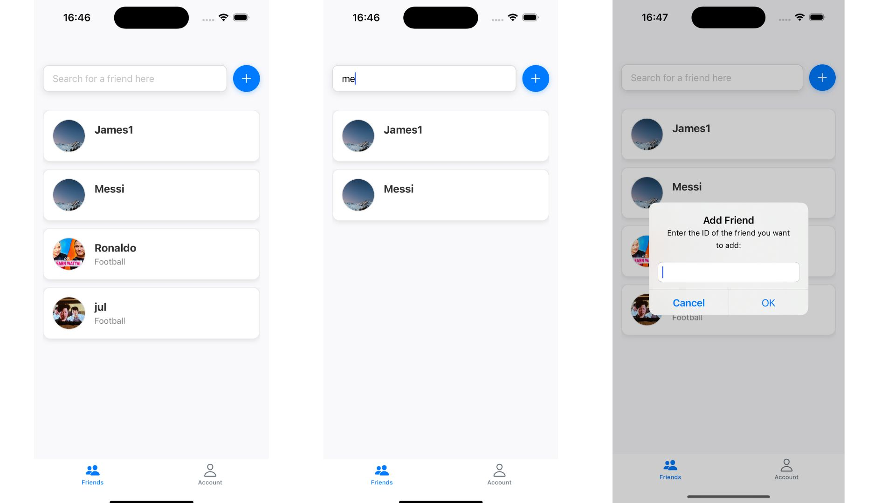
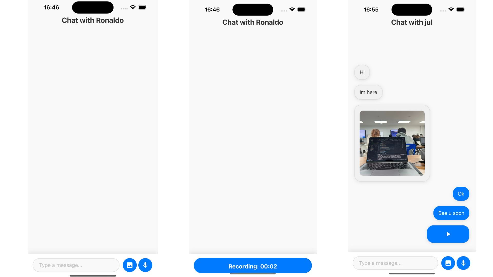
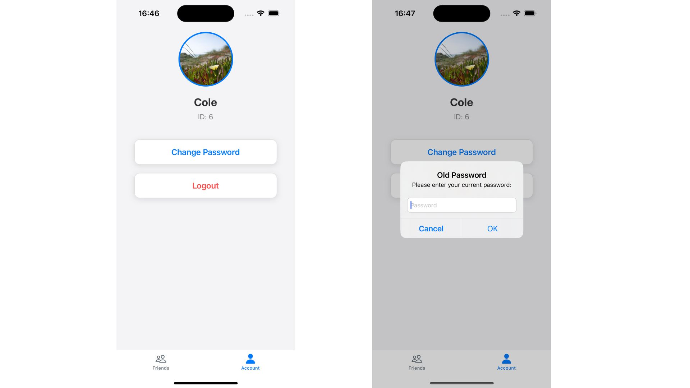
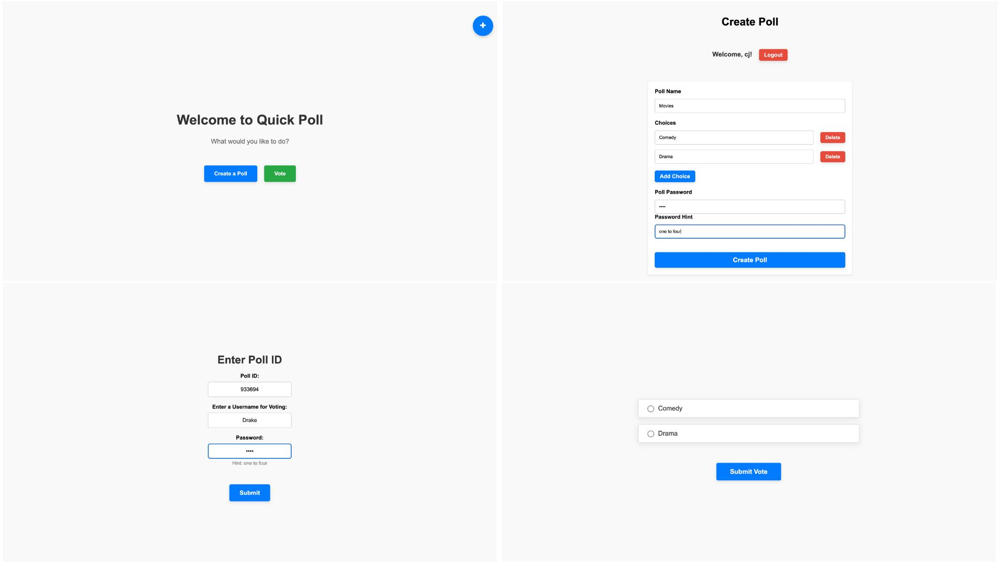
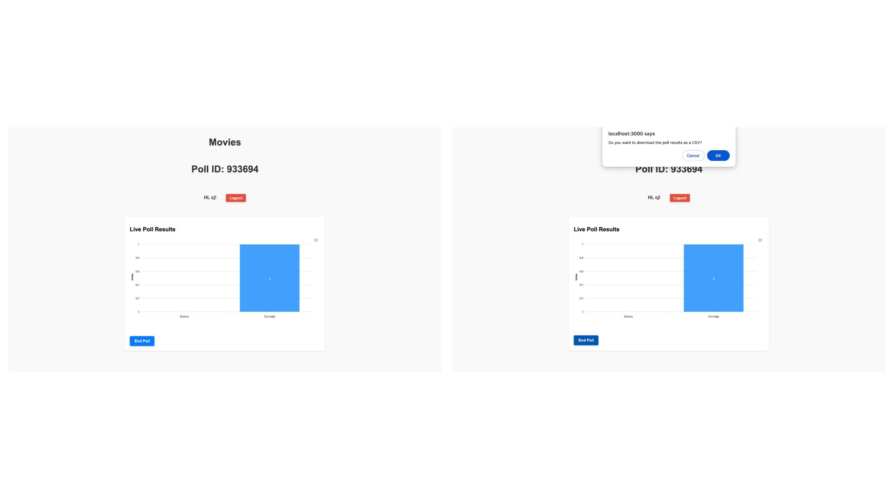
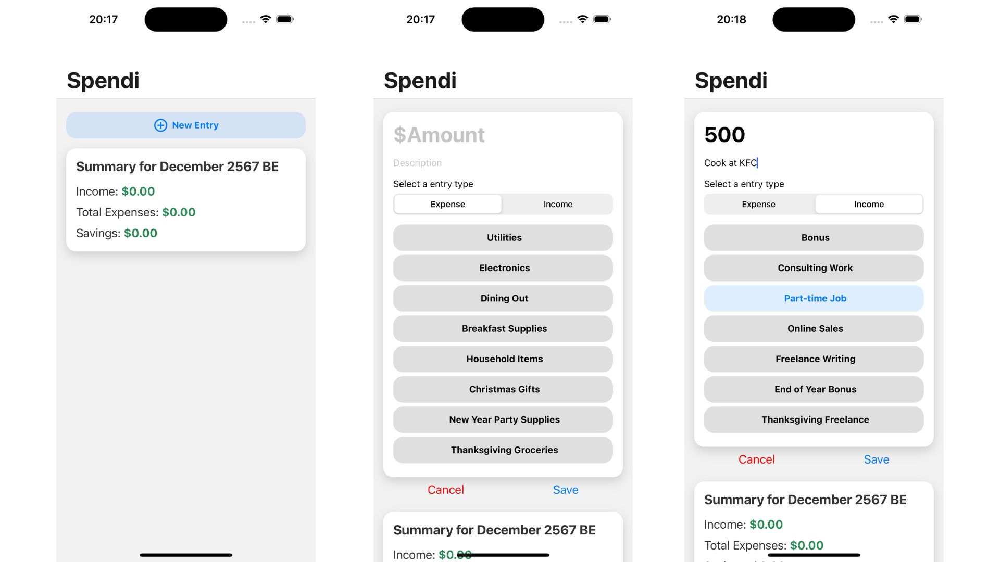
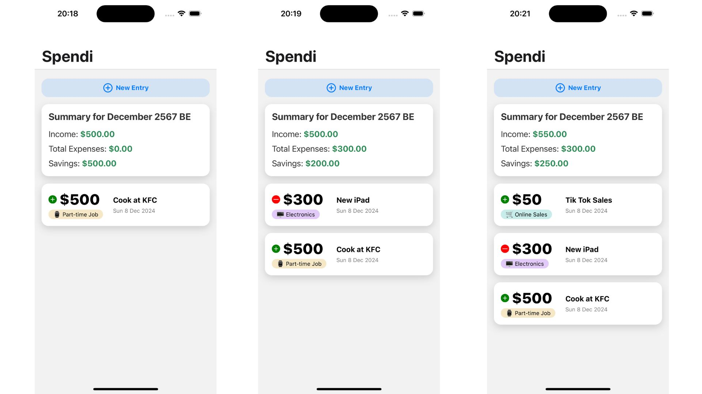
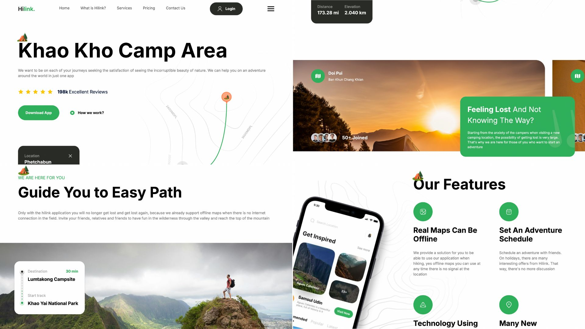
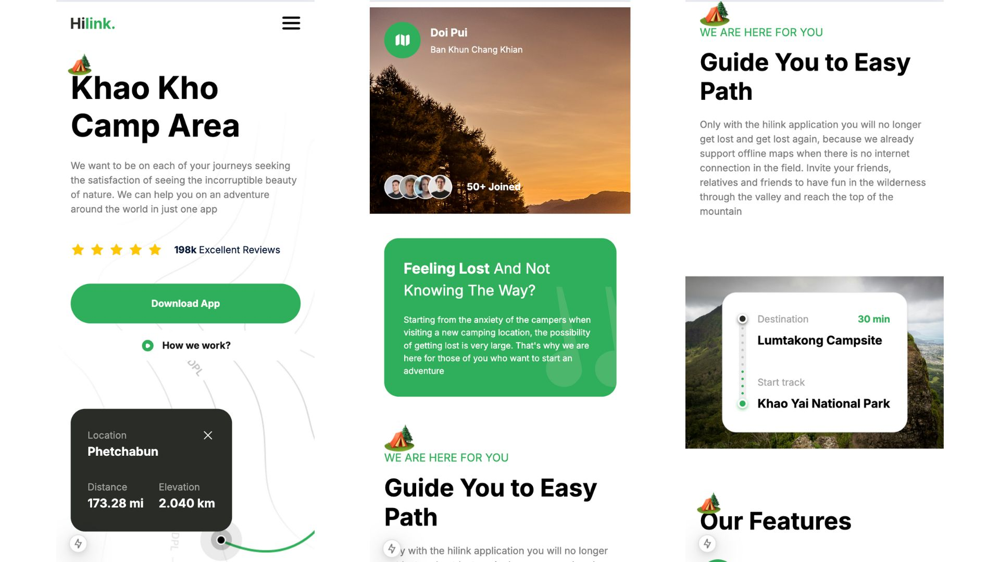
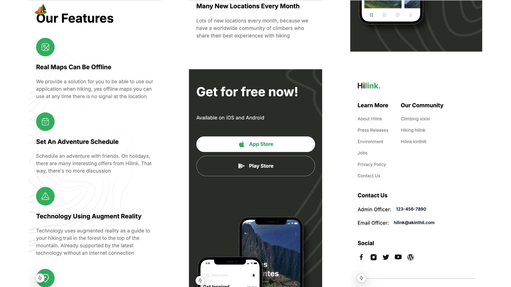

Dedicated and Hardworking Professional
With a Passion for Innovation and Excellence
I am a highly motivated software engineer with a strong work ethic and
a proven track record of delivering exceptional results. My technical
expertise spans across various modern technologies, including:
-
Programming Languages: Python, JavaScript,
TypeScript, C
-
Frameworks & Libraries: Django, React, Redux,
Next.js, Express.js
-
Data Tools: PySpark, Tableau, Postgres SQL, MongoDB
- Cloud Platforms: Azure, Google Cloud
- DevOps & Tools: Docker, Tailwind
In addition to my technical skills, I possess strong soft skills that
enable me to excel in collaborative environments:
- Leadership and Teamwork
- Effective Communication and Active Listening
- Problem-Solving and Critical Thinking
- Strategic and Analytical Thinking
- Time Management and Adaptability
- Creativity, Presentation, and Collaboration Skills
I take pride in my ability to blend technical proficiency with
strategic thinking to solve complex challenges and create impactful
solutions. I'm constantly seeking opportunities to grow and bring
value to innovative projects.
Projects



Chat App
A dynamic messaging platform that enables users to connect through
text, images, and audio. Users can add, edit, or remove friends,
manage friend organizations, and personalize their profiles
effortlessly.
Tech Stack: React Native (Frontend), Node.js
(Backend), PostgreSQL (Database), Socket.io (Real-Time
Communication), Cloudinary (Media Management).
The Creative Thought Process Behind It
The idea stemmed from observing modern users' increasing concerns
over privacy in digital interactions. While encryption is a standard
safeguard, it doesn't address the lingering unease of chat histories
being stored indefinitely. Inspired by the principle of "what
happens in the moment, stays in the moment," I developed this
feature to ensure that conversations remain private, ephemeral, and
free from long-term digital footprints.
How It Works
-
Temporary Conversations: When a user engages in
a chat, the messages are available only during that session. The
moment the user exits, the app securely deletes the chat history
from both the device and the server.
-
User-Controlled Privacy: This approach puts
control back in the users' hands, ensuring that even if their
device or account is accessed without their knowledge, no
sensitive conversations remain to be compromised.
-
Live Communication Focus: By pairing this
feature with real-time communication using Socket.io, the app
emphasizes the importance of presence and active engagement
during conversations.
The Innovation Behind the Design
This feature sets the app apart by addressing a real-world concern
creatively. While most apps prioritize archiving and searchability,
this app focuses on fostering trust and giving users peace of mind.
By integrating this into a user-friendly interface with robust
functionality, I’ve created a tool that is not only practical but
also aligns with modern values of data minimization and
privacy-first design.
This approach has resonated with users who value the freedom to
communicate without the worry of long-term storage. It’s a testament
to how innovative thinking can reshape even the most established
norms in app design.
Tech Stack
React Native (Frontend), Node.js (Backend), PostgreSQL (Database),
Socket.io (Real-Time Communication), Cloudinary (Media Management).


Quick Poll Website
A real-time polling platform that allows users to create polls,
vote, and download the poll results as a CSV file once the poll
concludes. The application ensures seamless data synchronization
through live updates.
The Creative Thought Process Behind It
The idea originated from the need to simplify group decision-making
processes. Whether for casual use, like deciding a movie, or
professional environments, such as team votes, this tool provides an
efficient and user-friendly solution.
How It Works
-
Poll Creation: Users can create polls with
multiple options and add a password for secure access.
-
Real-Time Voting: Participants can join using a
Poll ID and cast their votes. The results are displayed live
using Socket.io for real-time updates.
-
Exportable Results: Once the poll is concluded,
the organizer can download the results as a CSV file for further
analysis.
The Innovation Behind the Design
The live data visualization ensures transparency during the voting
process, fostering trust among participants. The secure access with
password protection allows private group interactions, while the CSV
export adds value for professional use cases.
The system's lightweight and intuitive interface makes it easy for
users of all technical proficiencies to interact with the platform,
ensuring widespread adoption.
Tech Stack
React (Frontend), Node.js (Backend), PostgreSQL (Database),
Socket.io (Real-Time Communication).


Spendi
A personal finance app that helps users track their expenses and
income within a month. Spendi provides a user-friendly interface and
robust functionality to help users stay on top of their financial
goals effortlessly.
The Creative Thought Process Behind It
Spendi was inspired by the growing need for better personal
financial management. With so many people struggling to track their
spending and savings, the app was designed to offer a simple yet
effective way to manage daily finances, promoting financial health
and awareness.
How It Works
-
Expense and Income Logging: Users can log their
daily expenses and income, categorizing them to gain a clear
understanding of their financial habits.
-
Monthly Summaries: The app provides monthly
overviews, including a breakdown of total income, expenses, and
savings, helping users track their progress toward financial
goals.
-
Secure and Local Storage: By using SQLite for
the database, Spendi ensures that users' financial data remains
secure and accessible offline.
The Innovation Behind the Design
Spendi focuses on simplicity and practicality. The app eliminates
the complexities often associated with financial tools, allowing
users to focus on what matters most—managing their finances
effectively. Its intuitive design ensures that users of all ages and
technical skills can easily adopt and benefit from the app.
The use of local storage ensures data security, while its
lightweight design makes it efficient for use even on devices with
limited resources.
Tech Stack
React Native (Frontend), Node.js (Backend), SQLite (Database).



Responsive Camping Web Design
A responsive web design project focused on creating a seamless
camping-related platform. The project highlights modern UI/UX
principles while offering features like offline maps, adventure
scheduling, and augmented reality technology.
The Creative Thought Process Behind It
Inspired by the love of outdoor adventures and the challenges
campers face when navigating new locations, this design ensures
users can plan their trips and explore confidently. By incorporating
responsive design, it works perfectly across devices.
The Innovation Behind the Design
This project prioritizes simplicity and functionality, integrating
offline maps for remote areas, augmented reality for navigation, and
a visually appealing design. It ensures campers have access to tools
that enhance their experiences in nature.
By leveraging modern frameworks and design patterns, the website
maintains high performance while delivering an intuitive experience
for users of all skill levels.
Tech Stack
React and Next.js (Frontend). Credit: JavaScriptMastery channel for
the tutorial and resources.